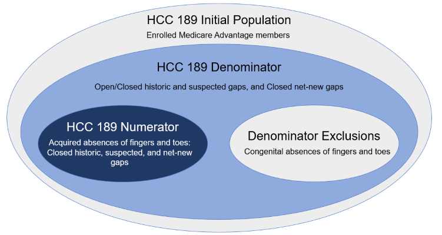

Da Vinci Risk Adjustment Implementation Guide
3.0.0-ballot - STU 3.0.0-ballot

Da Vinci Risk Adjustment Implementation Guide
3.0.0-ballot - STU 3.0.0-ballot

Da Vinci Risk Adjustment Implementation Guide - Local Development build (v3.0.0-ballot) built by the FHIR (HL7® FHIR® Standard) Build Tools. See the Directory of published versions
| Page standards status: Draft |
The content about Digital Condition Category is included in this implementation guide as DRAFT.
This page describes Digital Condition Categories (dCCs), a new concept introduced in this implementation guide.
Complete, accurate, and timely data collection is crucial to the long-term financial stability of Medicare Advantage (MA) and other risk adjustment programs. To ensure reliable financial reporting, diagnostic coding guidelines must be correctly applied to encounter data. In MA, coding intensity refers to observed differences in the prevalence of diagnostic coding between private MA plans and traditional Fee-For-Service Medicare. Both the Centers for Medicare and Medicaid Services (CMS) and the General Accounting Office (GAO) have long been concerned about the coding intensity issue, which resulted in an estimated $12 billion in excess Medicare spending in 2020 alone.1 The GAO estimates that roughly a tenth of Medicare payments to MA plans in 2021 were improper, totaling about $23 billion for the year.
Under risk adjustment, risk adjustment coders (e.g., Certified Risk Adjustment Coder (CRC)) review encounter data to determine if patients have certain medical conditions that might increase their expected cost of claims during an enrollment period. If the coders find evidence that meets quality standards, the payer can typically expect to receive a payment adjustment that is meant to offset the higher-than-expected cost of claims. Unfortunately, there is a financial incentive for payers to misuse the HCC coding process to make patients appear to be sicker than they actually are, thus generating inflated and improper payments. For this reason, coding intensity is subject to extensive regulation and safeguards. Several attempts have been made over the years to address the problem, such as correction factors and stepped-up enforcement of contract-level Risk Adjustment Data Validation (RADV) audits. These efforts have been met with only limited success, and the US Federal Government is still actively seeking a solution to the problem. The root cause of the problem is the improper manual application of the ICD-10-CM coding guidelines to unstructured encounter data. The operative terms here are “manual” and “unstructured”. By using Clinical Quality Language (CQL) to program the ICD-10-CM coding logic, together with FHIR resources to structure the encounter data and create a stable target for the CQL, a practical and definitive solution to the coding intensity problem may finally be at hand. Digital Condition Categories (dCCs) are the risk adjustment counterpart to digital quality measures (dQMs) which are increasingly being used for the quality measure evaluation. A dCC, then, is the risk adjustment equivalent to a dQM.
During the July 2022 CMS Connectathon a dCC proof-of-concept was conducted to demonstrate automated coding for HCC 179 (amputation of lower limb). In principle, any risk-adjustable Condition Category could be coded by this method, prior to applying the HCC hierarchies.
Similar to the definitions of dQMs2, digital Condition Categories are Condition Category measures organized as self-contained measure specification and code packages, that use standardized, digital data from one or more sources of health information that are captured and exchanged electronically via interoperable systems. Digital Condition Categories use machine-readable measure logic, such as logics written in CQL, and common data models such as FHIR.
A digital Condition Category is structured as a proportion measure3, which consists of an initial population, denominator, numerator, and optional denominator exclusions as shown in the Venn diagram in Figure 3-1.

Table 3-1: Condition Category Measure Population.
| Population | Definition |
|---|---|
| Initial Population | The initial population refers to all patients to be evaluated by a Condition Category measure who share a common set of specified characteristics. All patients counted are drawn from the initial population. |
| Denominator | The denominator population includes 1) historic gaps that are either open or closed 2) suspected gaps that are either open or closed 3) net-new gaps. Note that gaps that are net-news are always closed. |
| Denominator Exclusions | Exclusion criteria that defines patients to be removed from the denominator. |
| Numerator | The numerator population includes closed historic gaps, closed suspected gaps, and net-new Condition Categories (CCs). |
Figure 3-2 is a Venn diagram that shows the Condition Catetory measure population using a hierarchical Condition Category code, HCC189 "Amputation Status, Lower Limb/Amputation Complications" as an exmaple.

The FHIR server is pre-populated with patient data and dCCs. The Payer then runs the $ra.evaluate-measure operation to produce a Risk Adjustment Coding Gap Report. During the operation, CQL is executed against the patient and risk adjustment data. The resources used by CQL logic evaluation are tracked and included in the final Risk Adjustment Coding Gap Report.
$ra.evaluate-measure to dCCs would be considered as equivalent to using $evaluate-measure to calculate an eCQM and obtain the results.
The $ra.evaluate-measure operation requires four input (IN) parameters: subject, periodStart, periodEnd, and one of the measure parameters (measureId, measureIdentifier, or measureUrl). The subject parameter references either a single patient or a group of patients (as specified in the Patient Group profile). The term clinical evaluation period refers to the time period during which the risk adjusting encounters could be conducted and documented with expectations of submissions for risk adjustment purposes. The periodStart and periodEnd parameters are the start and end dates of the clinical evaluation period. The measure parameter identifies the measure definition of a risk adjustment model that will be used to calculate dCCs.
Specifying a digital Condition Category should follow the using CQL requirements specified in the Quality Measure Implementation Guide. Future versions of this IG may specify additional requirements for specifying dCCs using CQL and provide examples.
IG © 2021+ HL7 International / Clinical Quality Information.
Package hl7.fhir.us.davinci-ra#3.0.0-ballot based on FHIR 4.0.1.
Generated
2026-03-08
Links: Table of Contents |
QA Report
| Version History |
 |
Propose a change
|
Propose a change